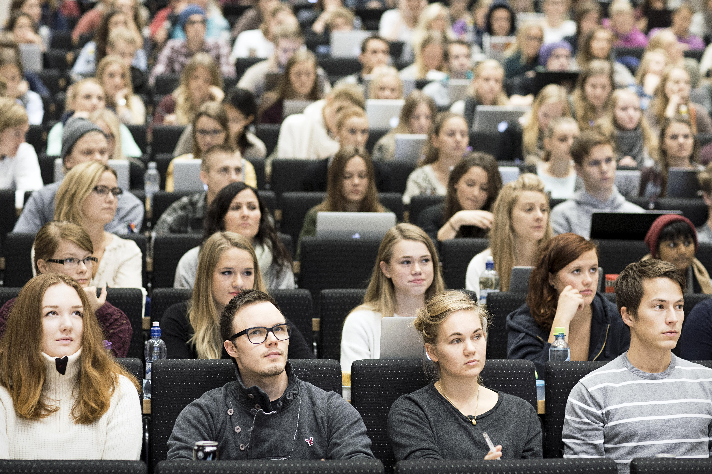
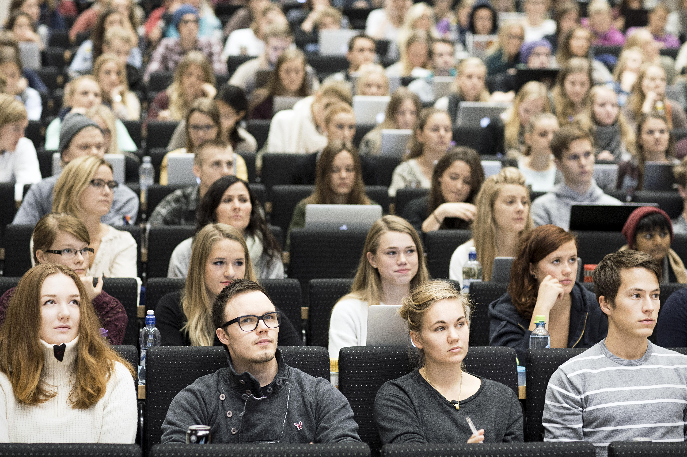

Reflection
In this essay we describe some of the challenges experienced by students transitioning from school to university.
 Read moreHave you ever wondered what it's like being a first-year student at OsloMet? Here the members of Project Group 8 reflect on our first semester and share our thoughts and experiences about the ups and downs of student life.
In this essay we describe some of the challenges experienced by students transitioning from school to university.
 Read moreFind out how the group checked, validated, and made coding choices for universal design during the development of this website.
 Read more
Read more
Here you can read the assignment we submitted for the module 'The interplay between technology and society'
Read more